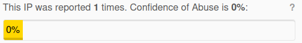

| Ник | Пост | Дата |
|---|---|---|
| Anonimno(Anonimno) |
С месяц или полтора началась такая реакция Youtube на любое видео без авторизации, как на самом Youtube так и на встроенных видео на других сайтах.  Есть способы побороть без смены ip, хостинга? | 2024-12-05T11:33:45.642Z |
| Anonimno(Anonimno) | Но с другого ip VPS, с которого ходит большое колличество юзеров, такой заглушки от Youtube нет | 2024-12-05T11:54:52.764Z |
| Xunlei |
Завернуть | 2024-12-05T11:56:52.749Z |
| manwithbox(manwithbox) | С этого айпи адреса на ютуб были попытки фишинга, или спам, или поисковые запросы… В общем всё, что подозрительно напоминает деятельность бота. | 2024-12-05T12:10:35.036Z |
| move-approve | У меня тоже так. Скорее всего, это ютуб борется с “пиратскими” прокси-клиентами (invidious, piped и т.д.). Просто не дают получать видео без логина, если подключение из сетей, где раньше замечались публичные инстансы данных клиентов. | 2024-12-05T12:10:42.326Z |
| manwithbox(manwithbox) |
Не борется он с ними. Ютуб не может никак повлиять на инвидус, так как проект не использует апи гугла, и автор четко дал понять, что хухел может сак хис дик. Что до пипеда, то там вроде проблем нет. Тогда придется фильтровать весь интернет. Потому что под эту категорию попадают все сайты, где есть embed интеграции. Скорее всего смотрят какую-то базу потенциально опасных адресов и туда вешают свой антибот. | 2024-12-05T12:19:22.925Z |
| anon9001(anon) |
api | 2024-12-05T12:52:00.470Z |
| naruto522ru | А вот и нет! | 2024-12-05T16:00:47.213Z |
| 0ka(0ka) | весь диапазон или даже хостинг вносят в список подозрительных. на ava hosting например вообще не работают видео, даже с аккаунтом | 2024-12-05T16:19:42.441Z |
| naruto522ru | Ну да есть такое подозрение и у меня, что вот так они делают. Решение тупо авторизовываться в аккаунт или через что-то перегонять траффик. Вот или переносить сервер на другой хостинг. | 2024-12-05T16:21:42.781Z |
| Praising7137 |
Были слухи, что это как-то связано с тем, что видео выкачивали для рутуба. По времени как раз совпадает, даже зарубежные блоггеры об этом говорили. | 2024-12-06T15:25:01.876Z |
| Quqas(Quqas) | обходится tampermonkey+js патч | 2024-12-06T22:44:18.319Z |
| Anonimno(Anonimno) | Немного офтопа: | 2024-12-11T07:45:01.030Z |
{kind=link}
{kind=link}